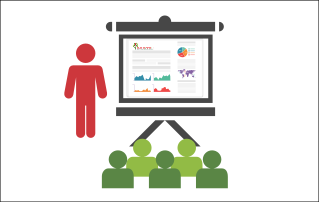

Estudos Teóricos
Projeto Final de Modelagem e Simulação
No projeto final de Modelagem e Simulação, o objetivo era modelar uma sistema físico mecânico e era necessário modelo-lo usando três eixos. Para isso era necessário fazer o diagrama de corpo livre, identificando todas as forças que atuam no sistema. Após isso, conceitos de cálculo foram usados para descobrir as equações diferenciais de primeira e segunda ordem. Por fim, essas equações foram implementadas usando python para gerar os gráficos. 
Projeto Final de Desconstruindo a Matéria
No projeto final de Desconstruindo a Matéria, os alunos tem como objetivo fazer um estudo de seleção de materiais. Neste trabalho o tema é livre, ou seja, os alunos podem escolher o tópico que querem abordar no projeto.
Projeto Final de Matemática da Variação
O objetivo do projeto de Matemática da Variação é promover a autonomia e o a auto-didática dos alunos. Esses consiste em um projeto livre, no qual o aluno escolhe um tema matemático de seu interesse faz um estudo aprofundado e depois o apresenta para sua turma.
Projeto Final de Matemática Multivariada
O objetivo do projeto de Matemática Multivariada é promover a autonomia e o a auto-didática dos alunos. Esses consiste em um projeto livre, no qual o aluno escolhe um tema matemático de seu interesse e faz um estudo aprofundado de um artigo acadêmico, o que serve para introduzir o aluno a esse tipo de documento com um nível de complexidade maior e um vocabulário complexo